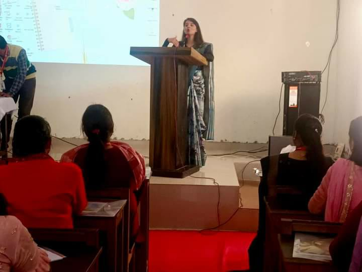
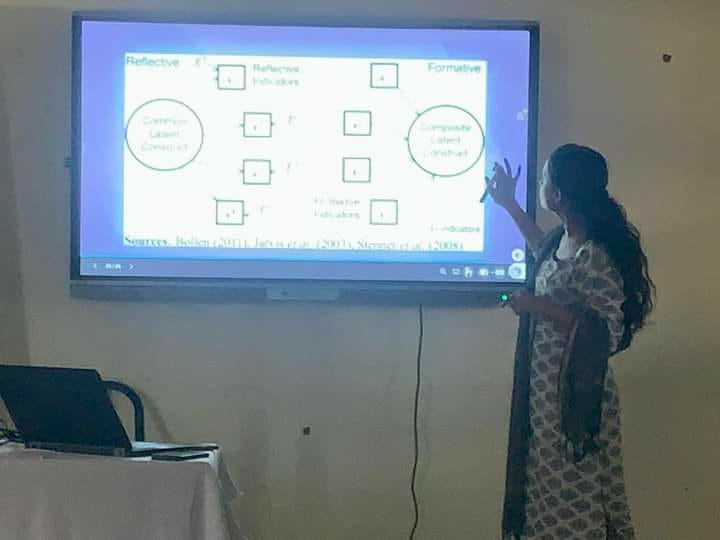
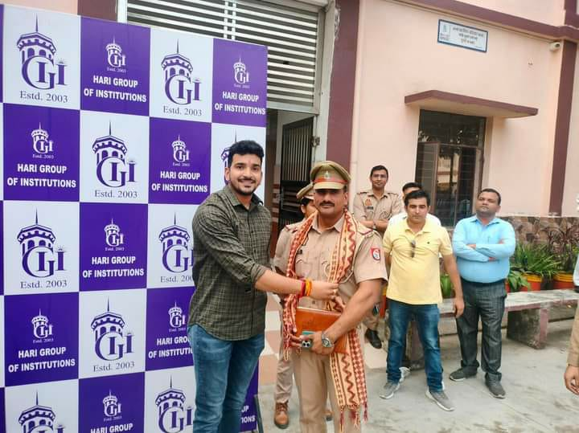
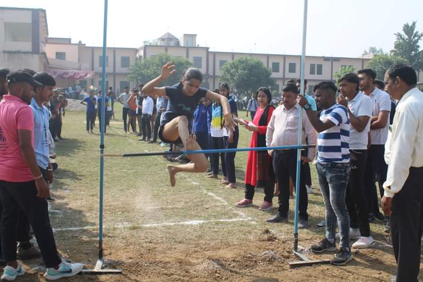

Haripal Choudhary, the esteemed founder of Hari Institute Of Technology, was a visionary leader and philanthropist whose dedication to education has left an enduring legacy. Born with a deep passion for learning, he recognized the transformative power of education in shaping individuals and communities. In 2003, he established Hari Institute Of Technology with the mission to provide accessible, quality education to students, particularly from rural and marginalized backgrounds. Under his leadership, the college grew to become a beacon of academic excellence and social responsibility. Haripal Choudhary’s commitment to inclusivity, character-building, and holistic development continues to inspire both students and faculty. His enduring influence is reflected in the college’s values, which prioritize not only academic success but also the personal growth of every individual. The impact of his vision remains a guiding force in the institution’s pursuit of educational and social advancement.
Subhash Choudhary, our esteemed college chairman, is a dynamic and visionary leader who has played a pivotal role in shaping the institution's success. With his unwavering commitment to academic excellence, he has transformed the college into a place where students not only receive a quality education but also grow holistically. His leadership is marked by integrity, strategic foresight, and a deep understanding of the evolving needs of education. Subhash Choudhary places a strong emphasis on creating an inclusive, supportive environment, where both students and faculty feel empowered to achieve their best. Under his guidance, the college has flourished, with improved infrastructure, state-of-the-art facilities, and a focus on innovation. He is a mentor to many, always encouraging students to reach their full potential and pursue their dreams with confidence. His dedication to continuous improvement and his ability to inspire those around him have had a profound impact on everyone in the college community. Subhash Choudhary’s contributions extend beyond academics, as he fosters a culture of leadership, integrity, and responsibility among students. His leadership continues to steer the institution towards greater heights, ensuring its place as a beacon of knowledge and opportunity. Truly, his vision and efforts have left an indelible mark on the college and its future.
Mayank Choudhary, our college director, is a dynamic and forward-thinking leader dedicated to shaping the future of our institution. His passion for education and commitment to student success are evident in every aspect of the college’s development. Under his guidance, the college has seen significant improvements in academic standards, campus infrastructure, and technological integration. Mayank Choudhary encourages a collaborative and innovative environment, empowering both students and faculty to reach their full potential. He is a strong advocate for holistic development, ensuring that students are not only equipped with academic knowledge but also essential life skills. With his strategic vision and hands-on approach, Mayank Choudhary continues to inspire and lead the college toward excellence.
N.P. Rathor, our esteemed college principal, is a dedicated and respected leader who upholds the highest standards of academic and moral integrity. His commitment to fostering an environment of discipline, excellence, and innovation has significantly contributed to the growth of our college. With his vast experience and deep understanding of education, he continually motivates both students and faculty to strive for success. Under his leadership, the college has implemented various programs that promote overall student development and academic achievement. N.P. Rathor is known for his approachable nature, always open to suggestions and concerns, creating a positive and supportive atmosphere on campus. His guidance and vision continue to inspire the college community to reach new heights.
 Qualify teacher |
 Smart classes |
 Guests |
 Games |